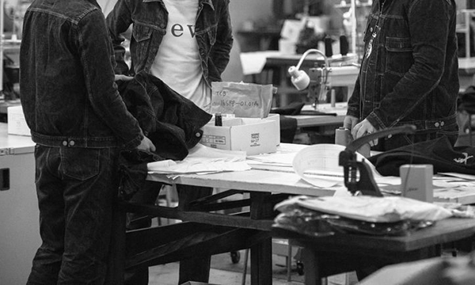
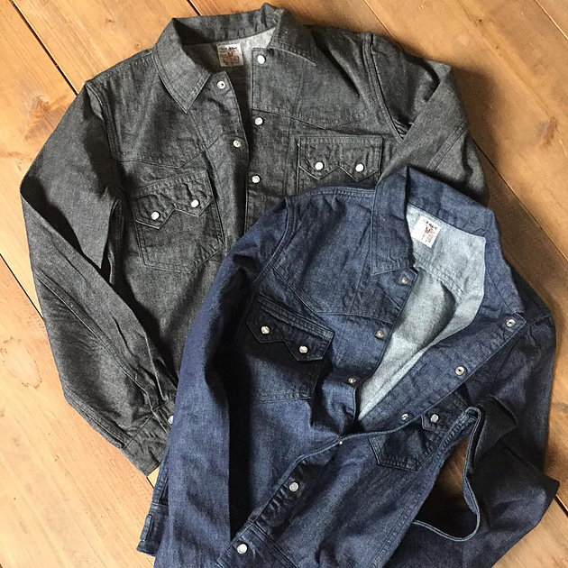
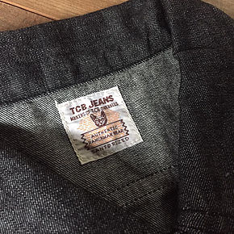
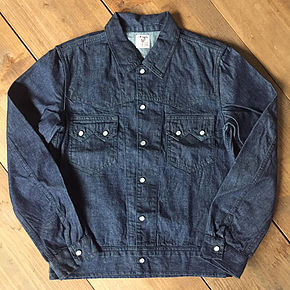
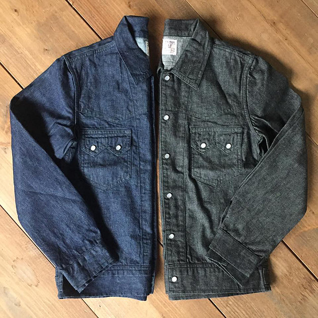

ビンテージジーンズの魅力を最大限に引き出す【TCB】のモノ作り
July 12, 2017
岡山県倉敷市児島にある縫製工場の自社ブランド(ファクトリーブランド)として展開しているTCB jeans。
ビンテージと呼ばれる時代の製品を細部にまでこだわり魅力を最大限引き出すモノ作りをしている。
TCBjeansではused加工をしたジーンズは発売していませんが、普段色々な取引様ブランドの加工やリメイクの企画をプレゼンしています。
ビンテージと呼ばれる時代の製品を細部にまでこだわり魅力を最大限引き出すモノ作りをしている。
TCBjeansではused加工をしたジーンズは発売していませんが、普段色々な取引様ブランドの加工やリメイクの企画をプレゼンしています。
【TCB jeans】"Buckaroo Jacket"

50's のショートホーンウエスタンジャケットを再現したバッカルージャケット
(バッカルーとはカウボーイのローカルネーム)
米綿をベースにオーストラリア綿をブレンドしています 機械を使ってナチュラルなムラ糸を作っています。
2/1組織で比較的しっかりと打ち込んでいるので適度のハリコシの ある規格になっています。
(バッカルーとはカウボーイのローカルネーム)
米綿をベースにオーストラリア綿をブレンドしています 機械を使ってナチュラルなムラ糸を作っています。
2/1組織で比較的しっかりと打ち込んでいるので適度のハリコシの ある規格になっています。

blackは中白ロープ染色の硫化ブラックデニム。
□中白効果 デニムの経糸の紺糸の断面を拡大すると、芯白の堅牢染になっている。従って、着用後洗濯の度数に応じて糸の表面が摩滅して、糸の芯白の部分が現われ、白線が走ったような独得な色調を表現する。
□「黒」の成分を持った硫黄鉛をナトリウムで還元して水にいったん溶かし、繊維に吸収させた後、酸化させて不溶性の色素に戻す方法。
ラベルは参考にした古着の特徴である、 長い角を長い耳に変更した 通称『ロングイヤーネーム』
□中白効果 デニムの経糸の紺糸の断面を拡大すると、芯白の堅牢染になっている。従って、着用後洗濯の度数に応じて糸の表面が摩滅して、糸の芯白の部分が現われ、白線が走ったような独得な色調を表現する。
□「黒」の成分を持った硫黄鉛をナトリウムで還元して水にいったん溶かし、繊維に吸収させた後、酸化させて不溶性の色素に戻す方法。
ラベルは参考にした古着の特徴である、 長い角を長い耳に変更した 通称『ロングイヤーネーム』

indigoはやや明るめのインディゴブルーを採用。
濃色が出せなかったデニム誕生当初の色合いを再現しています。
濃色が出せなかったデニム誕生当初の色合いを再現しています。

ボタンは、白蝶貝キャップ。
ユニバーサル社のドットボタンを使用しています。
ユニバーサル社のドットボタンを使用しています。
シンプルでありながら見応えのあるディテールは圧巻！
是非、ショップで手に取ってお確かめください。
是非、ショップで手に取ってお確かめください。